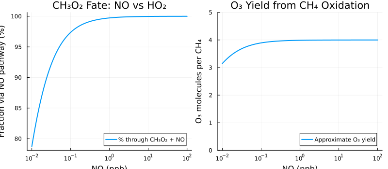
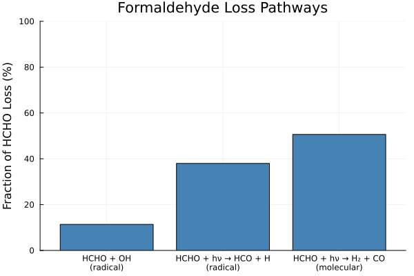

Methane Oxidation
Overview
Methane (CH4) is the most abundant hydrocarbon in the atmosphere (~1.8 ppm). Its oxidation is the archetypal VOC oxidation mechanism, proceeding through several intermediates:
CH4 -> CH3O2 -> CH3O -> HCHO -> HCO -> CO -> CO2Each step can produce ozone when NOx is present through peroxy + NO reactions. At high NOx, complete CH4 oxidation can produce 3-5 O3 molecules.
Two components are provided:
MethaneOxidation: Algebraic system computing individual reaction rates and diagnostics from Table 6.1MethaneOxidationODE: Full ODE system for time evolution of all species
Reference: Seinfeld, J.H. and Pandis, S.N. (2006). Atmospheric Chemistry and Physics: From Air Pollution to Climate Change, 2nd Edition. John Wiley & Sons. Section 6.4, Table 6.1, pp. 219-227.
GasChem.MethaneOxidation — Function
MethaneOxidation(; name)ModelingToolkit System implementing reaction rate diagnostics for the methane oxidation mechanism from Table 6.1 of Seinfeld & Pandis Chapter 6.
This system computes individual reaction rates and diagnostic production/loss terms.
Species (Input Variables)
- CH4, CH3, CH3O2, CH3O, CH3OOH: Methane chain species [m⁻³]
- HCHO, HCO, CO: Formaldehyde and products [m⁻³]
- OH, HO2, H: HOx species [m⁻³]
- NO, NO2, O, O2, O3: NOx and oxygen species [m⁻³]
- M: Total air density [m⁻³]
Diagnostics (Output Variables)
- R1-R17: Individual reaction rates [m⁻³ s⁻¹]
- PO3gross: Gross O₃ production from peroxy+NO reactions [m⁻³ s⁻¹]
- P_HCHO: HCHO production rate [m⁻³ s⁻¹]
- L_CH4: CH₄ loss rate [m⁻³ s⁻¹]
Rate Constants
All rate constants from Table 6.1 at 298 K are implemented as parameters. Bimolecular rate constants converted from cm³/molec/s to m³/s (×10⁻⁶). Termolecular rate constants converted from cm⁶/molec²/s to m⁶/s (×10⁻¹²). # Parameters - Rate constants at 298 K from Table 6.1 (converted to SI)
GasChem.MethaneOxidationODE — Function
MethaneOxidationODE(; name)Full ODE system for methane oxidation with species time derivatives.
This uses Catalyst.jl's reaction network DSL to define the 17 reactions from Table 6.1 plus auxiliary reactions (CO+OH, OH+NO₂, HO₂+HO₂, NO+O₃) and an external OH source. The reaction network is converted to an ODE system.
Note: This is a stiff system due to the wide range of timescales (radicals have lifetimes of seconds, while CH₄ has a lifetime of years).
O₂ and M (total air density) are treated as parameters with default values for termolecular reactions (reactions 2, 6, 13, 14, 17).
Implementation
MethaneOxidation: State Variables
using DataFrames, ModelingToolkit, Symbolics, DynamicQuantities, GasChem
sys = MethaneOxidation()
vars = unknowns(sys)
DataFrame(
:Name => [string(Symbolics.tosymbol(v, escape = false)) for v in vars],
:Units => [dimension(ModelingToolkit.get_unit(v)) for v in vars],
:Description => [ModelingToolkit.getdescription(v) for v in vars]
)| Row | Name | Units | Description |
|---|---|---|---|
| String | Dimensio… | String | |
| 1 | R1 | m⁻³ s⁻¹ | CH₄ + OH rate |
| 2 | OH | m⁻³ | Hydroxyl radical |
| 3 | CH4 | m⁻³ | Methane |
| 4 | R2 | m⁻³ s⁻¹ | CH₃ + O₂ rate |
| 5 | O2 | m⁻³ | Molecular oxygen |
| 6 | M | m⁻³ | Total air density |
| 7 | CH3 | m⁻³ | Methyl radical |
| 8 | R3 | m⁻³ s⁻¹ | CH₃O₂ + NO rate |
| 9 | CH3O2 | m⁻³ | Methylperoxy radical |
| 10 | NO | m⁻³ | Nitric oxide |
| 11 | R4 | m⁻³ s⁻¹ | CH₃O₂ + HO₂ rate |
| 12 | HO2 | m⁻³ | Hydroperoxy radical |
| 13 | R5 | m⁻³ s⁻¹ | CH₃O₂ + CH₃O₂ rate |
| 14 | R6 | m⁻³ s⁻¹ | CH₃O + O₂ rate |
| 15 | CH3O | m⁻³ | Methoxy radical |
| 16 | R7 | m⁻³ s⁻¹ | CH₃OOH + OH → CH₃O₂ rate |
| 17 | CH3OOH | m⁻³ | Methyl hydroperoxide |
| 18 | R8 | m⁻³ s⁻¹ | CH₃OOH + OH → HCHO rate |
| 19 | R9 | m⁻³ s⁻¹ | CH₃OOH photolysis rate |
| 20 | R10 | m⁻³ s⁻¹ | HCHO + OH rate |
| 21 | HCHO | m⁻³ | Formaldehyde |
| 22 | R11 | m⁻³ s⁻¹ | HCHO → HCO + H rate |
| 23 | R12 | m⁻³ s⁻¹ | HCHO → H₂ + CO rate |
| 24 | R13 | m⁻³ s⁻¹ | HCO + O₂ rate |
| 25 | HCO | m⁻³ | Formyl radical |
| 26 | R14 | m⁻³ s⁻¹ | H + O₂ rate |
| 27 | H | m⁻³ | Hydrogen atom |
| 28 | R15 | m⁻³ s⁻¹ | HO₂ + NO rate |
| 29 | R16 | m⁻³ s⁻¹ | NO₂ photolysis rate |
| 30 | NO2 | m⁻³ | Nitrogen dioxide |
| 31 | R17 | m⁻³ s⁻¹ | O + O₂ rate |
| 32 | O | m⁻³ | Oxygen atom |
| 33 | L_CH4 | m⁻³ s⁻¹ | CH₄ loss rate |
| 34 | P_HCHO | m⁻³ s⁻¹ | HCHO production |
| 35 | P_O3_gross | m⁻³ s⁻¹ | Gross O₃ production (HO₂+NO + CH₃O₂+NO) |
MethaneOxidation: Parameters
params = parameters(sys)
DataFrame(
:Name => [string(Symbolics.tosymbol(p, escape = false)) for p in params],
:Units => [dimension(ModelingToolkit.get_unit(p)) for p in params],
:Description => [ModelingToolkit.getdescription(p) for p in params]
)| Row | Name | Units | Description |
|---|---|---|---|
| String | Dimensio… | String | |
| 1 | k1 | m³ s⁻¹ | CH₄ + OH rate (2.45e-12 exp(-1775/T) cm³/molec/s, Table 6.1 rxn 1) |
| 2 | k2_0 | m⁶ s⁻¹ | CH₃ + O₂ + M rate (1.0e-30 cm⁶/molec²/s) |
| 3 | k3 | m³ s⁻¹ | CH₃O₂ + NO rate (7.7e-12 cm³/molec/s) |
| 4 | k4 | m³ s⁻¹ | CH₃O₂ + HO₂ rate (5.2e-12 cm³/molec/s) |
| 5 | k5 | m³ s⁻¹ | CH₃O₂ + CH₃O₂ rate (3.5e-13 cm³/molec/s) |
| 6 | k6 | m³ s⁻¹ | CH₃O + O₂ rate (1.9e-15 cm³/molec/s) |
| 7 | k7 | m³ s⁻¹ | CH₃OOH + OH → CH₃O₂ rate (3.6e-12 exp(200/T) cm³/molec/s, Table 6.1 rxn 5a) |
| 8 | k8 | m³ s⁻¹ | CH₃OOH + OH → HCHO rate (1.9e-12 cm³/molec/s) |
| 9 | j9 | s⁻¹ | CH₃OOH photolysis rate |
| 10 | k10 | m³ s⁻¹ | HCHO + OH rate (9.0e-12 cm³/molec/s, p. 221) |
| 11 | j11 | s⁻¹ | HCHO → HCO + H photolysis rate |
| 12 | j12 | s⁻¹ | HCHO → H₂ + CO photolysis rate (~4e-5 s⁻¹, p. 221) |
| 13 | k13 | m³ s⁻¹ | HCO + O₂ rate (5.2e-12 cm³/molec/s) |
| 14 | k14_0 | m⁶ s⁻¹ | H + O₂ + M rate (5.7e-32 cm⁶/molec²/s) |
| 15 | k15 | m³ s⁻¹ | HO₂ + NO rate (8.1e-12 cm³/molec/s) |
| 16 | j16 | s⁻¹ | NO₂ photolysis rate |
| 17 | k17_0 | m⁶ s⁻¹ | O + O₂ + M rate (6.0e-34 cm⁶/molec²/s) |
MethaneOxidation: Equations
eqs = equations(sys)\[ \begin{align} \mathtt{R1}\left( t \right) &= \mathtt{k1} ~ \mathtt{CH4}\left( t \right) ~ \mathtt{OH}\left( t \right) \\ \mathtt{R2}\left( t \right) &= \mathtt{k2\_0} ~ \mathtt{CH3}\left( t \right) ~ M\left( t \right) ~ \mathtt{O2}\left( t \right) \\ \mathtt{R3}\left( t \right) &= \mathtt{k3} ~ \mathtt{NO}\left( t \right) ~ \mathtt{CH3O2}\left( t \right) \\ \mathtt{R4}\left( t \right) &= \mathtt{k4} ~ \mathtt{HO2}\left( t \right) ~ \mathtt{CH3O2}\left( t \right) \\ \mathtt{R5}\left( t \right) &= \left( \mathtt{CH3O2}\left( t \right) \right)^{2} ~ \mathtt{k5} \\ \mathtt{R6}\left( t \right) &= \mathtt{k6} ~ \mathtt{CH3O}\left( t \right) ~ \mathtt{O2}\left( t \right) \\ \mathtt{R7}\left( t \right) &= \mathtt{k7} ~ \mathtt{CH3OOH}\left( t \right) ~ \mathtt{OH}\left( t \right) \\ \mathtt{R8}\left( t \right) &= \mathtt{k8} ~ \mathtt{CH3OOH}\left( t \right) ~ \mathtt{OH}\left( t \right) \\ \mathtt{R9}\left( t \right) &= \mathtt{j9} ~ \mathtt{CH3OOH}\left( t \right) \\ \mathtt{R10}\left( t \right) &= \mathtt{k10} ~ \mathtt{HCHO}\left( t \right) ~ \mathtt{OH}\left( t \right) \\ \mathtt{R11}\left( t \right) &= \mathtt{j11} ~ \mathtt{HCHO}\left( t \right) \\ \mathtt{R12}\left( t \right) &= \mathtt{j12} ~ \mathtt{HCHO}\left( t \right) \\ \mathtt{R13}\left( t \right) &= \mathtt{k13} ~ \mathtt{HCO}\left( t \right) ~ \mathtt{O2}\left( t \right) \\ \mathtt{R14}\left( t \right) &= \mathtt{k14\_0} ~ M\left( t \right) ~ H\left( t \right) ~ \mathtt{O2}\left( t \right) \\ \mathtt{R15}\left( t \right) &= \mathtt{k15} ~ \mathtt{NO}\left( t \right) ~ \mathtt{HO2}\left( t \right) \\ \mathtt{R16}\left( t \right) &= \mathtt{j16} ~ \mathtt{NO2}\left( t \right) \\ \mathtt{R17}\left( t \right) &= \mathtt{k17\_0} ~ M\left( t \right) ~ O\left( t \right) ~ \mathtt{O2}\left( t \right) \\ \mathtt{L\_CH4}\left( t \right) &= \mathtt{R1}\left( t \right) \\ \mathtt{P\_HCHO}\left( t \right) &= \mathtt{R6}\left( t \right) + \mathtt{R8}\left( t \right) \\ \mathtt{P\_O3\_gross}\left( t \right) &= \mathtt{R15}\left( t \right) + \mathtt{R3}\left( t \right) \end{align} \]
MethaneOxidationODE: State Variables
ode_sys = MethaneOxidationODE()
vars_ode = unknowns(ode_sys)
DataFrame(
:Name => [string(Symbolics.tosymbol(v, escape = false)) for v in vars_ode],
:Units => [dimension(ModelingToolkit.get_unit(v)) for v in vars_ode],
:Description => [ModelingToolkit.getdescription(v) for v in vars_ode]
)| Row | Name | Units | Description |
|---|---|---|---|
| String | Dimensio… | String | |
| 1 | CH4 | m⁻³ | Methane |
| 2 | CH3 | m⁻³ | Methyl radical |
| 3 | CH3O2 | m⁻³ | Methylperoxy radical |
| 4 | CH3O | m⁻³ | Methoxy radical |
| 5 | CH3OOH | m⁻³ | Methyl hydroperoxide |
| 6 | HCHO | m⁻³ | Formaldehyde |
| 7 | HCO | m⁻³ | Formyl radical |
| 8 | CO | m⁻³ | Carbon monoxide |
| 9 | H2 | m⁻³ | Molecular hydrogen |
| 10 | OH | m⁻³ | Hydroxyl radical |
| 11 | HO2 | m⁻³ | Hydroperoxy radical |
| 12 | H | m⁻³ | Hydrogen atom |
| 13 | NO | m⁻³ | Nitric oxide |
| 14 | NO2 | m⁻³ | Nitrogen dioxide |
| 15 | O | m⁻³ | Oxygen atom |
| 16 | O3 | m⁻³ | Ozone |
| 17 | HNO3 | m⁻³ | Nitric acid |
| 18 | H2O2 | m⁻³ | Hydrogen peroxide |
Table 6.1: Rate Constants
Table 6.1 of Seinfeld & Pandis lists the 17 reactions of the methane oxidation mechanism with their rate constants at 298 K. The table below reproduces these values from the implementation parameters (converted from SI back to cm³ molecule⁻¹ s⁻¹ for comparison with the textbook):
using DataFrames
# Reproduce Table 6.1 from the model parameters
reactions = [
"1. CH₄ + OH → CH₃ + H₂O",
"2. CH₃ + O₂ + M → CH₃O₂ + M",
"3. CH₃O₂ + NO → CH₃O + NO₂",
"4. CH₃O₂ + HO₂ → CH₃OOH + O₂",
"5. CH₃O₂ + CH₃O₂ → products",
"6. CH₃O + O₂ → HCHO + HO₂",
"7. CH₃OOH + OH → CH₃O₂ + H₂O",
"8. CH₃OOH + OH → HCHO + OH + H₂O",
"9. CH₃OOH + hν → CH₃O + OH",
"10. HCHO + OH → HCO + H₂O",
"11. HCHO + hν → HCO + H",
"12. HCHO + hν → H₂ + CO",
"13. HCO + O₂ → CO + HO₂",
"14. H + O₂ + M → HO₂ + M",
"15. HO₂ + NO → OH + NO₂",
"16. NO₂ + hν → NO + O",
"17. O + O₂ + M → O₃ + M"
]
# Rate constants from Table 6.1 at 298 K
k_values = [
"6.3 × 10⁻¹⁵",
"1.0 × 10⁻³⁰ [M]",
"7.7 × 10⁻¹²",
"5.2 × 10⁻¹²",
"3.5 × 10⁻¹³",
"1.9 × 10⁻¹⁵",
"3.8 × 10⁻¹²",
"1.9 × 10⁻¹²",
"j ≈ 5 × 10⁻⁶ s⁻¹",
"9.0 × 10⁻¹²",
"j ≈ 3 × 10⁻⁵ s⁻¹",
"j ≈ 4 × 10⁻⁵ s⁻¹",
"5.2 × 10⁻¹²",
"5.7 × 10⁻³² [M]",
"8.1 × 10⁻¹²",
"j ≈ 8 × 10⁻³ s⁻¹",
"6.0 × 10⁻³⁴ [M]"
]
units = [
"cm³ molec⁻¹ s⁻¹",
"cm⁶ molec⁻² s⁻¹",
"cm³ molec⁻¹ s⁻¹",
"cm³ molec⁻¹ s⁻¹",
"cm³ molec⁻¹ s⁻¹",
"cm³ molec⁻¹ s⁻¹",
"cm³ molec⁻¹ s⁻¹",
"cm³ molec⁻¹ s⁻¹",
"s⁻¹",
"cm³ molec⁻¹ s⁻¹",
"s⁻¹",
"s⁻¹",
"cm³ molec⁻¹ s⁻¹",
"cm⁶ molec⁻² s⁻¹",
"cm³ molec⁻¹ s⁻¹",
"s⁻¹",
"cm⁶ molec⁻² s⁻¹"
]
DataFrame(:Reaction => reactions, :k_298K => k_values, :Units => units)| Row | Reaction | k_298K | Units |
|---|---|---|---|
| String | String | String | |
| 1 | 1. CH₄ + OH → CH₃ + H₂O | 6.3 × 10⁻¹⁵ | cm³ molec⁻¹ s⁻¹ |
| 2 | 2. CH₃ + O₂ + M → CH₃O₂ + M | 1.0 × 10⁻³⁰ [M] | cm⁶ molec⁻² s⁻¹ |
| 3 | 3. CH₃O₂ + NO → CH₃O + NO₂ | 7.7 × 10⁻¹² | cm³ molec⁻¹ s⁻¹ |
| 4 | 4. CH₃O₂ + HO₂ → CH₃OOH + O₂ | 5.2 × 10⁻¹² | cm³ molec⁻¹ s⁻¹ |
| 5 | 5. CH₃O₂ + CH₃O₂ → products | 3.5 × 10⁻¹³ | cm³ molec⁻¹ s⁻¹ |
| 6 | 6. CH₃O + O₂ → HCHO + HO₂ | 1.9 × 10⁻¹⁵ | cm³ molec⁻¹ s⁻¹ |
| 7 | 7. CH₃OOH + OH → CH₃O₂ + H₂O | 3.8 × 10⁻¹² | cm³ molec⁻¹ s⁻¹ |
| 8 | 8. CH₃OOH + OH → HCHO + OH + H₂O | 1.9 × 10⁻¹² | cm³ molec⁻¹ s⁻¹ |
| 9 | 9. CH₃OOH + hν → CH₃O + OH | j ≈ 5 × 10⁻⁶ s⁻¹ | s⁻¹ |
| 10 | 10. HCHO + OH → HCO + H₂O | 9.0 × 10⁻¹² | cm³ molec⁻¹ s⁻¹ |
| 11 | 11. HCHO + hν → HCO + H | j ≈ 3 × 10⁻⁵ s⁻¹ | s⁻¹ |
| 12 | 12. HCHO + hν → H₂ + CO | j ≈ 4 × 10⁻⁵ s⁻¹ | s⁻¹ |
| 13 | 13. HCO + O₂ → CO + HO₂ | 5.2 × 10⁻¹² | cm³ molec⁻¹ s⁻¹ |
| 14 | 14. H + O₂ + M → HO₂ + M | 5.7 × 10⁻³² [M] | cm⁶ molec⁻² s⁻¹ |
| 15 | 15. HO₂ + NO → OH + NO₂ | 8.1 × 10⁻¹² | cm³ molec⁻¹ s⁻¹ |
| 16 | 16. NO₂ + hν → NO + O | j ≈ 8 × 10⁻³ s⁻¹ | s⁻¹ |
| 17 | 17. O + O₂ + M → O₃ + M | 6.0 × 10⁻³⁴ [M] | cm⁶ molec⁻² s⁻¹ |
Analysis
Methane Oxidation Chain: O3 Yield at High vs Low NOx
The fate of the methylperoxy radical (CH3O2) depends on the NOx level. At high NOx, CH3O2 reacts with NO to produce NO2 (and subsequently O3), while at low NOx, CH3O2 reacts with HO2 to form CH3OOH, which terminates the radical chain. This determines the overall O3 yield per CH4 molecule oxidized.
This analysis uses the MethaneOxidation system to compute the competing reaction rates R3 (CH3O2 + NO) and R4 (CH3O2 + HO2) across a range of NO concentrations.
using Plots, NonlinearSolve
sys_nns = ModelingToolkit.toggle_namespacing(sys, false)
input_vars = [sys_nns.CH4, sys_nns.CH3, sys_nns.CH3O2, sys_nns.CH3O, sys_nns.CH3OOH,
sys_nns.HCHO, sys_nns.HCO, sys_nns.OH, sys_nns.HO2, sys_nns.H,
sys_nns.NO, sys_nns.NO2, sys_nns.O, sys_nns.O2, sys_nns.M]
compiled = mtkcompile(sys; inputs = input_vars)
# Fixed conditions (SI: m⁻³)
M_val = 2.5e25
O2_val = 5.25e24
HO2_val = 1e14 # m⁻³ (= 1e8 cm⁻³)
CH3O2_val = 1e14 # m⁻³
CH4_val = 4.5e19 # ~1800 ppb
OH_val = 1e12 # typical daytime
# Vary NO from 10 ppt to 100 ppb (m⁻³)
NO_ppb = 10 .^ range(-2, 2, length = 200)
NO_vals = NO_ppb .* 2.5e16 # m⁻³
# Compute R3 (CH3O2+NO) and R4 (CH3O2+HO2) using the system
R3_vals = Float64[]
R4_vals = Float64[]
# Set all species to typical values
base_dict = Dict(
compiled.CH4 => CH4_val, compiled.CH3 => 1e10, compiled.CH3O2 => CH3O2_val,
compiled.CH3O => 1e10, compiled.CH3OOH => 1e14, compiled.HCHO => 1e15,
compiled.HCO => 1e10, compiled.OH => OH_val, compiled.HO2 => HO2_val,
compiled.H => 1e8, compiled.NO => NO_vals[1], compiled.NO2 => 1e16,
compiled.O => 1e8, compiled.O2 => O2_val, compiled.M => M_val)
prob = NonlinearProblem(compiled, base_dict; build_initializeprob = false)
for no in NO_vals
newprob = remake(prob, p = [compiled.NO => no])
sol = solve(newprob)
push!(R3_vals, sol[compiled.R3])
push!(R4_vals, sol[compiled.R4])
end
# Fraction through NO pathway
f_NO = R3_vals ./ (R3_vals .+ R4_vals)
# Approximate O3 yield (up to ~4 O3 per CH4 at full NO pathway)
O3_yield = 4.0 .* f_NO
p1 = plot(NO_ppb, f_NO .* 100,
xlabel = "NO (ppb)", ylabel = "Fraction via NO pathway (%)",
title = "CH₃O₂ Fate: NO vs HO₂",
xscale = :log10, linewidth = 2,
label = "% through CH₃O₂ + NO",
legend = :bottomright)
p2 = plot(NO_ppb, O3_yield,
xlabel = "NO (ppb)", ylabel = "O₃ molecules per CH₄",
title = "O₃ Yield from CH₄ Oxidation",
xscale = :log10, linewidth = 2,
label = "Approximate O₃ yield",
legend = :bottomright, ylims = (0, 5))
plot(p1, p2, layout = (1, 2), size = (800, 350))"/home/runner/work/GasChem.jl/GasChem.jl/docs/build/ch4_o3_yield.svg"
The left panel shows the fraction of CH3O2 that reacts with NO (the O3-producing pathway) vs HO2 (the chain-terminating pathway). At 1 ppb NO, nearly all CH3O2 reacts with NO. The right panel shows that the approximate O3 yield per CH4 molecule increases from near zero at very low NOx (where peroxide formation dominates) to about 4 at high NOx, consistent with the discussion in Section 6.4 of Seinfeld & Pandis.
Formaldehyde Branching Pathways
Formaldehyde (HCHO) is a key intermediate with three loss pathways: reaction with OH, radical photolysis (HCO + H), and molecular photolysis (H2 + CO). The branching ratio affects the HOx budget.
This analysis uses the MethaneOxidation system to compute the three HCHO loss rates (R10, R11, R12) at typical daytime conditions.
# Compute HCHO loss rates using the system
HCHO_val = 1e15 # m⁻³
OH_val_hcho = 1e12 # m⁻³ (= 1e6 cm⁻³)
hcho_prob = remake(prob, p = [
compiled.HCHO => HCHO_val, compiled.OH => OH_val_hcho])
sol = solve(hcho_prob)
R10_val = sol[compiled.R10] # HCHO + OH
R11_val = sol[compiled.R11] # HCHO → HCO + H
R12_val = sol[compiled.R12] # HCHO → H₂ + CO
L_total = R10_val + R11_val + R12_val
fractions = [R10_val / L_total * 100, R11_val / L_total * 100, R12_val / L_total * 100]
labels_bar = [
"HCHO + OH\n(radical)", "HCHO + hν → HCO + H\n(radical)", "HCHO + hν → H₂ + CO\n(molecular)"]
bar(labels_bar, fractions,
ylabel = "Fraction of HCHO Loss (%)",
title = "Formaldehyde Loss Pathways",
label = false, color = [:steelblue :orange :green],
size = (600, 400), ylims = (0, 100))"/home/runner/work/GasChem.jl/GasChem.jl/docs/build/hcho_branching.svg"
At typical daytime conditions (OH = 10^6 molec/cm3), the molecular photolysis channel (producing H2 + CO) is the largest single loss pathway. Both the OH reaction and radical photolysis channels produce HOx radicals that contribute to further O3 production, while the molecular channel does not produce radicals.